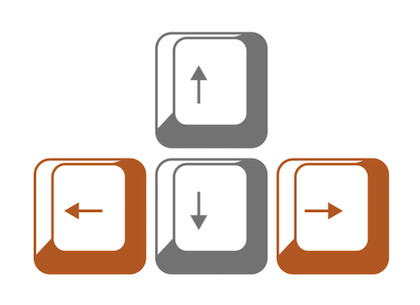

<!DOCTYPE html>
<html>

<head>
  <title> Arnold's Tongue Test </title>
  <script src="jatos.js"></script>
  <!-- <script src="arnold_audiofiles.js"></script> -->
  <script src="jspsych-6.1.0/jspsych.js"></script>
  <script src="jspsych-6.1.0/plugins/jspsych-instructions.js"></script>
  <script src="jspsych-6.1.0/plugins/jspsych-audio-keyboard-responseSSS.js"></script>
  <script src="jspsych-6.1.0/plugins/jspsych-audio-keyboard-response-TAP.js"></script>
  <script src="jspsych-6.1.0/plugins/jspsych-html-button-response.js"></script>
  <script src="jspsych-6.1.0/plugins/jspsych-html-keyboard-response.js"></script>
  <script src="jspsych-6.1.0/plugins/jspsych-html-keyboard-response-ITI.js"></script>
  <link href="jspsych-6.1.0/css/jspsych.css" rel="stylesheet" type="text/css">
  </link>
</head>
<body></body>
<script>


var audio_files = [
"hey_stims/stimtest_2Hz_int_0.08.wav",
"hey_stims/stimtest_2Hz_int_0.06.wav",
"hey_stims/stimtest_2Hz_int_0.04.wav",
"hey_stims/stimtest_2Hz_int_0.02.wav",
];


var stimz = [
  {
    stimulus:'hey_stims/stimtest_2Hz_int_0.02.wav'
  },
  {
    stimulus:'hey_stims/stimtest_2Hz_int_0.04.wav'
  },
  {
    stimulus:'hey_stims/stimtest_2Hz_int_0.06.wav'
  },
  {
    stimulus:'hey_stims/stimtest_2Hz_int_0.08.wav'
  },
];

  // FUNCTIONS ========================================================

  function calc_ioi_med(arr) {
    var diff = new Array(arr.length - 1);
    for (var i = 0; i < arr.length - 1; i++) {
      diff[i] = arr[i + 1] - arr[i];
    }

    var sum = diff.reduce((sum, val) => (sum += val));
    var len = diff.length;
    var arrSort = diff.sort();
    var mid = Math.ceil(diff.length / 2);
    var median = len % 2 == 0 ? (arrSort[mid] + arrSort[mid - 1]) / 2 : arrSort[mid - 1];
    return Math.round(median / 1000);
    };
    function playVol(audio) {
    audio.play();
  };


  jatos.onLoad(function() {
    // // +++++++++++++++++++++++++++++++++++++++++++++++++++++++++++++
    // function init_experiment() {

      // VARIABLES ========================================================

      var timeVar = [];

      var hello = {
        type: 'html-button-response',
        stimulus: '<p style="font-size:30px;">hi!</p>'+
            '<p>You can use either one of the left or right arrow keys to tap.</p>' +
            '<div style="text-align:center">' +
            '' +
            '</div>' ,
        choices: ['ok']
      };

      var thxbye = {
        type: 'html-button-response',
        stimulus: '<p style="font-size:30px;">Thank you!</p>' +
          '<p>You have completed the experiment.</p>' +
          '<p>Click &#39close&#39 to save csv file of your responses. </p>',
        choices: ['Close']
      };


      // PRACTICE ---------------------------------------
      var feedback_text = [];
      var practice_procedure = {
        timeline: [{
            type: 'jspsych-audio-keyboard-response-TAP',
            stimulus: jsPsych.timelineVariable('stimulus'),
            choices: [37, 39],
            prompt: "<p> + </p>",
            response_ends_trial: false,
            trial_ends_after_audio: true,
            on_finish: function(data) {
              var curr_stim_ioi = parseInt(data.stimulus.substr(12, 3));
              if (data.tap_times === undefined || data.tap_times.length == 0) {
                // array empty or does not exist
                feedback_text.push('No taps detected!<br><br>');
              }
                else { // if number of taps is fine,
                  var tap_ioi = calc_ioi_med(data.tap_times); // calculate their ioi
                    feedback_text.push(tap_ioi);
              }// if else calculations
            } // on_finish: function
          }, // trial timeline

          { // intertrial intv
            type: 'html-keyboard-response-ITI',
            stimulus: '+',
            trial_duration: 500,
            choices: jsPsych.NO_KEYS
          },

          { // feedback
            type: 'html-button-response',
            on_start: function(trial) {
              trial.stimulus = feedback_text +' ms';
              feedback_text = [];
            },
            stimulus: '+',
            choices: ['OK']
          }
        ],

        timeline_variables: stimz,
        randomize_order: false,
      } // practice_procedure end

      // PROCEDURE ========================================================
      timeVar.push(hello);
      timeVar.push(practice_procedure);
      timeVar.push(thxbye);

      // EXPERIMENT INIT ========================================================
      jsPsych.init({
        timeline: timeVar, //use timeVar as timeline
        use_webaudio: false,
        preload_audio: audio_files,
        on_close: function() {
          jsPsych.data.get().localSave('csv', 'clsd_data.csv');
        },
        on_finish: function() {
          jsPsych.data.get().localSave('csv', 'fin_data.csv');
        },
      });
    // } // function init_experiment end

  }); // end of Jatos func
</script>

</html>
